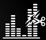

¿Como darte cuenta?
Fallas en la voz: Sonido robótico y/o ausencia de respiraciones
Errores de audio: Ecos, acentos o pronunciaciones raras.

Cortes: La IA suele dejar huecos vacíos o cortes muy bruscos en las frecuencias altas.
Información obtenida de: /estudiantes-argentina.unir.net/